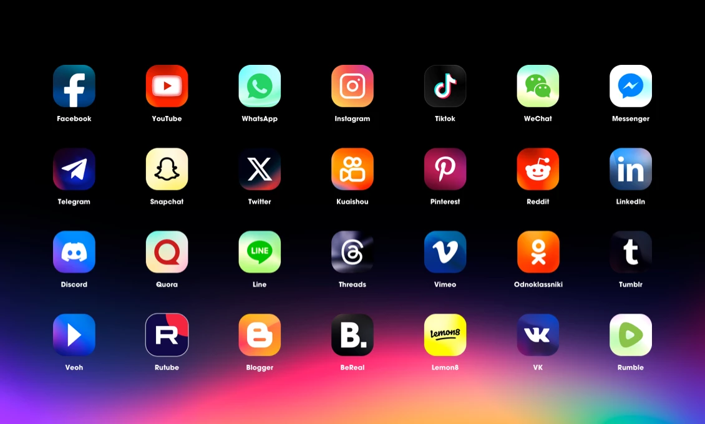
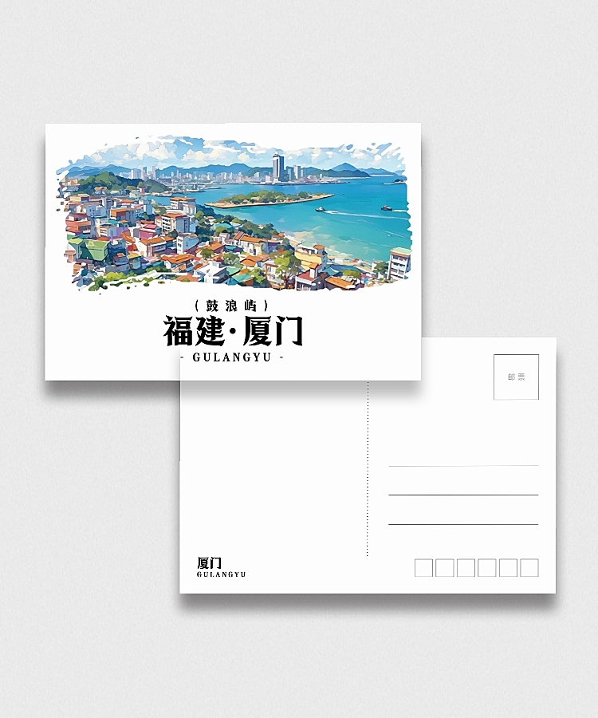
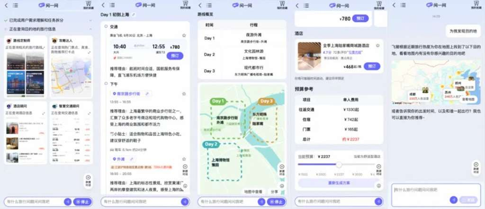
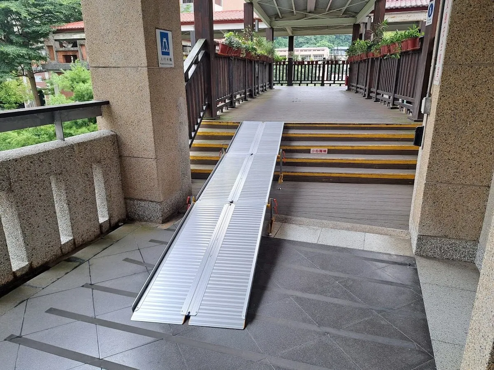
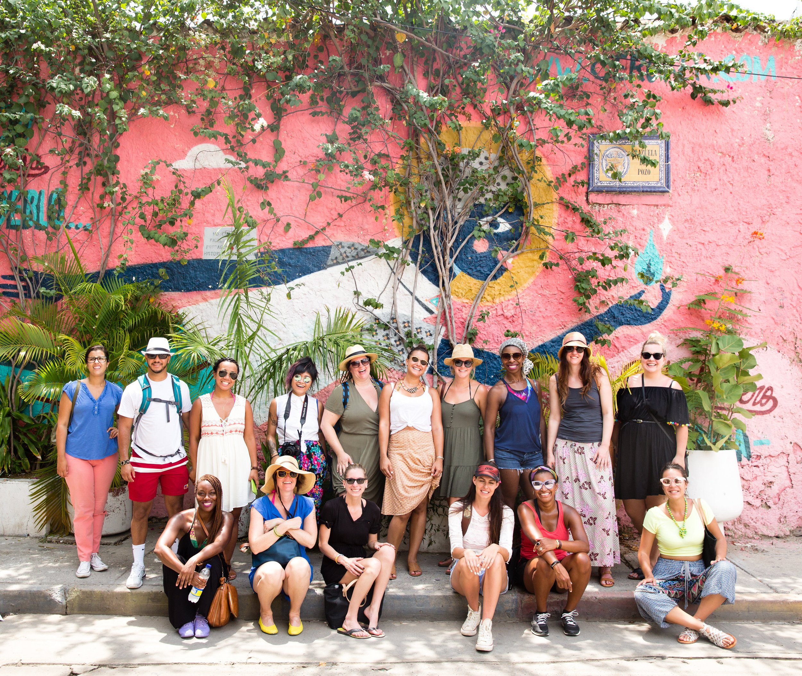
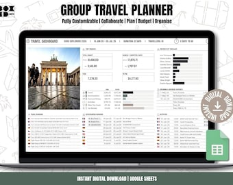

社交链接智能解析
告别繁琐的攻略整理。只需粘贴分享链接，系统即可智能识别并提取结构化信息，构建您的专属行程模板[04_社交链接解析界面设计.md]。
哔哩哔哩深度解析
提取视频标题、弹幕评论及UP主信息，识别目的地与避雷提醒。
抖音热门挖掘
分析短视频内容与热门标签，生成景点打卡点和美食推荐。
小红书攻略提取
解析图文笔记与避雷指南，构建详细的行程模板与注意事项。
基于画像的精准推荐
多维度用户画像分析，实现行程与偏好的完美匹配[03_智能推荐卡片设计分析.md]

年龄标签系统
- 青年(18-25)：背包客、预算友好型
- 成年(26-45)：家庭友好、舒适平衡
- 中年(46-65)：文化深度游、高端定制
- 银发(65岁+)：慢节奏、健康关怀
价格区间匹配
- 经济型(¥0-500)：青旅、公共交通
- 舒适型(¥500-1500)：三星酒店、包车
- 豪华型(¥1500-5000)：五星酒店、私导
- 顶级(¥5000+)：专机、管家服务
兴趣偏好分析
采用混合推荐策略，综合预算、年龄、兴趣、时间和拥挤度计算匹配分值，确保推荐精准度。
多维可视化概览
拒绝枯燥的列表，提供沉浸式的行程预览体验。系统支持时间轴、地图、网格三种视图，全方位掌握行程细节[05_行程可视化概览设计.md]。
时间轴视图
水平与垂直双轴展示，支持拖拽调整时间顺序，一键优化路线，直观感受行程节奏。
智能地图可视化
不同颜色标注交通方式，图层控制显示景点、餐饮、住宿，支持缩放与交互查看。
数据可视化图表
预算分析饼图、拥挤度热力图、价格波动趋势，用数据辅助决策，平衡各项支出。

三步生成您的专属行程
链接解析生成
粘贴1-3个旅游分享链接（支持B站、抖音、小红书），点击生成，AI自动提取信息并构建行程模板。
- 包含避雷提醒
- 智能优化路线
个性化调整
查看匹配度评分，拖拽调整行程顺序，修改活动时长，点击替换查看AI推荐的替代方案。
- 拖拽排序
- 智能替换
可视化预览
切换时间轴和地图视图，检查路线合理性，查看拥挤度热力图避开高峰，一键优化最终方案。
- 多视图切换
- 一键导出
案例：京都7日深度游
匹配度 92%传统规划方式
- 耗时：3-5天研究攻略
- 信息源：分散的网站和攻略
- 避雷：依赖零散用户评价
- 结果：可能遗漏亮点，路线未优化
智能规划系统
- 耗时：10分钟 (3链接解析+5分钟调整)
- 信息源：整合300+用户分享内容
- 避雷：自动识别12个避雷点
- 结果：8个必游+3个隐藏打卡+5家餐厅
智能避雷识别系统
基于NLP技术，系统自动识别"避雷"、"踩坑"等负面关键词，分析内容时效性与价格合理性。智能标注警告图标，详细说明问题来源，助您轻松规避旅游陷阱[04_社交链接解析界面设计.md]。
核心资源预订与后勤
一站式旅行资源管理，让预订变得简单高效
旅行资源预订是整个旅行规划中最关键、最耗时的环节。研究表明，平均每位旅行者需要访问4-6个不同平台来完成交通、住宿、景点门票和美食预订[475]。我们的一站式预订系统通过深度整合，为您解决信息错位、价格不一致和行程冲突的痛点。
效率提升
集中管理所有预订信息，平均节省60%的预订时间
价格透明
实时比价系统确保获得最优价格，拒绝隐形消费
行程协同
各资源间的关联性自动匹配，智能避免时间与空间冲突
售后保障
统一的客服体系和退改政策，全程无忧出行
批量预订
支持同时预订多个资源，系统自动检查时间冲突并提供最优路线建议。
团体服务
专属团体折扣、一对一客服服务、灵活改签政策，满足多人出行需求。
无障碍预订
全站支持屏幕阅读器、键盘导航优化、高对比度模式，服务每一位旅行者。
数据洞察与趋势分析
基于数据的智能决策支持
数据洞察与趋势分析模块是"归途"智能旅游平台的核心竞争力所在，通过整合多维度的旅游数据，为用户提供精准的决策支持。本模块包含三大核心功能：价格波动趋势分析、景点拥挤度实时监控、以及预算数据分析与优化。基于大数据和机器学习算法，我们将复杂的数据转化为直观的可视化图表，帮助旅行者优化出行时间、控制旅行成本、提升旅行体验[89][95]。
预算数据分析与优化
旅游预算数据分析模块旨在帮助旅行者建立科学的预算管理体系，通过可视化图表清晰展示资金流向，识别支出盲点，避免超支陷阱[250][253]。系统提供智能分析，为用户提供个性化的预算优化建议。
支出结构可视化
环形图直观展示各类支出占比，快速识别主要支出类别。
动态预算追踪
颜色编码实时反馈预算使用率，防止不知不觉超支。
智能优化建议
识别过度分配，发现节省机会，提供个性化消费提醒。
高级功能特性
- 多人协作预算管理：支持团队共享账户，自动计算分摊金额，方便团队旅行费用管理。
- 预算模板快速设置：提供亲子游、自助游、商务游等多种模板，一键应用。
- 智能预算预测：基于行程安排和历史数据预测总支出，超支前提供调整方案。

数据可视化设计原则
我们的数据可视化设计严格遵循Anthropic的设计哲学，强调清晰、克制、信息密度高。采用柔和的色彩系统，避免过度装饰，确保信息的可读性和可访问性。
进阶学习方向
- 掌握时序数据分析方法（移动平均、ARIMA）
- 学习机器学习预测模型提升价格预测准确性
- 深入理解旅游行业定价策略与用户行为分析
"旅游就是旅游，哪分什么有障碍和无障碍的。我们想要的是一个所有人都可以使用的产品。无障碍其实不是一种服务，而是一种环境。"[522]
—— 比利时旅游局经验分享

健康关怀设备连接
多终端覆盖
支持智能手表（Apple Watch, 华为等）、智能手环、专业医疗设备（心电图、血压计）以及毫米波生命体征监测仪。
智能预警与响应
当生理指标超出安全阈值（如心率异常、血氧过低）或发生跌倒时，系统自动触发严重告警[7]。SOS求助系统会自动记录位置与健康状态，通知指挥中心进行快速救援。
技术发展趋势
- • AI赋能：机器学习算法提前预测健康风险。
- • 5G应用：支持实时远程医疗诊断。
- • 边缘计算：毫秒级跌倒检测响应。
- • 区块链：保障数据不可篡改。
- • 辅佐视力训练：通过互动游戏提升视觉健康。
数据安全与隐私
- 用户授权与数据最小化原则。
- TLS/SSL加密传输与存储。
- 基于角色的严格访问控制。
- 符合GDPR及个人信息保护法。
我们将持续优化无障碍设施，提升服务质量，让每一位旅行者都能感受到温暖、包容和尊重，让每一段旅程都成为美好的回忆。
沉浸式文化体验与导览
AR/VR技术赋能深度探索，让历史触手可及
AR/VR技术在文化旅游领域正变得越来越重要，为游客提供了沉浸式的文化体验和虚拟预览功能。增强现实（AR）将数字信息与用户环境实时集成，让游客在真实地点获得增强的历史文化信息。虚拟现实（VR）则生成完全人工的环境，创造与现实世界不同的虚拟环境，让游客身临其境地感受不同的历史文化和景观体验[57][62][64][332]。
AR/VR技术能够将静态的文物和文化遗址"活"起来，让游客在现实世界中通过数字信息的叠加获得更丰富的体验。COVID-19大流行加速了数字旅游趋势，在旅行限制期间，许多人转向虚拟体验，为AR/VR创新铺平了道路[57][62]。
科技赋能文化场馆
社区协作与动态行程
连接旅行者，共享美好体验
核心理念：共建共享的旅行生态
在当今旅行生态中，社区协作已成为提升旅行体验的关键因素。研究表明，在线旅游社区成员的互动性、信任和流体验之间存在紧密关系——互动性是成员在在线旅游社区中拥有流体验的关键因素，而流体验可以增强成员在在线旅游社区中的交易意图[240]。
归途平台通过构建活跃的旅行社区，让每一位旅行者都能找到志同道合的伙伴，分享真实的旅行体验，动态优化旅行计划。

UGC行程调整工具

可视化看板界面
提供日历看板、交互式地图与时间轴视图，支持拖拽调整，让复杂行程一目了然[214]。
多人协作机制
支持投票、评论讨论和版本控制，自动检测时间冲突，确保团队协作顺畅高效。
实践案例
8位好友计划10天欧洲三国之旅，通过归途平台实现实时协作、投票共识、智能优化路线减少30%通勤时间，最终生成全员满意的完美行程。
社区互动与动态更新
实时连接，共享旅途每一刻
动态流界面设计
- • 时间轴视图：按时间顺序显示活动更新，记录旅行足迹。
- • 卡片式布局：内容丰富，支持无限滚动，浏览体验流畅。
- • 智能筛选：按类型、时间、相关性快速定位感兴趣的内容。
实时通信技术
- • WebSocket/SSE：实现聊天、状态更新的实时双向通信。
- • WebRTC：支持点对点视频聊天，拉近旅伴距离。
- • 离线支持：支持离线编辑，网络恢复后自动同步。
隐私与安全
- 数据保护：传输存储加密，严格遵守GDPR法规。
- 内容审核：AI+人工双重审核，建立社区规范。
- 无障碍设计：支持键盘导航、屏幕阅读器，高对比度显示。
未来发展
- AI增强：更智能的个性化推荐和内容创作助手。
- AR/VR集成：沉浸式预览旅行目的地。
- DAO治理：去中心化社区治理与代币激励。
"在这里，每一位旅行者都能找到志同道合的伙伴，分享真实的体验，获得有价值的建议，共同创造难忘的旅行记忆。"